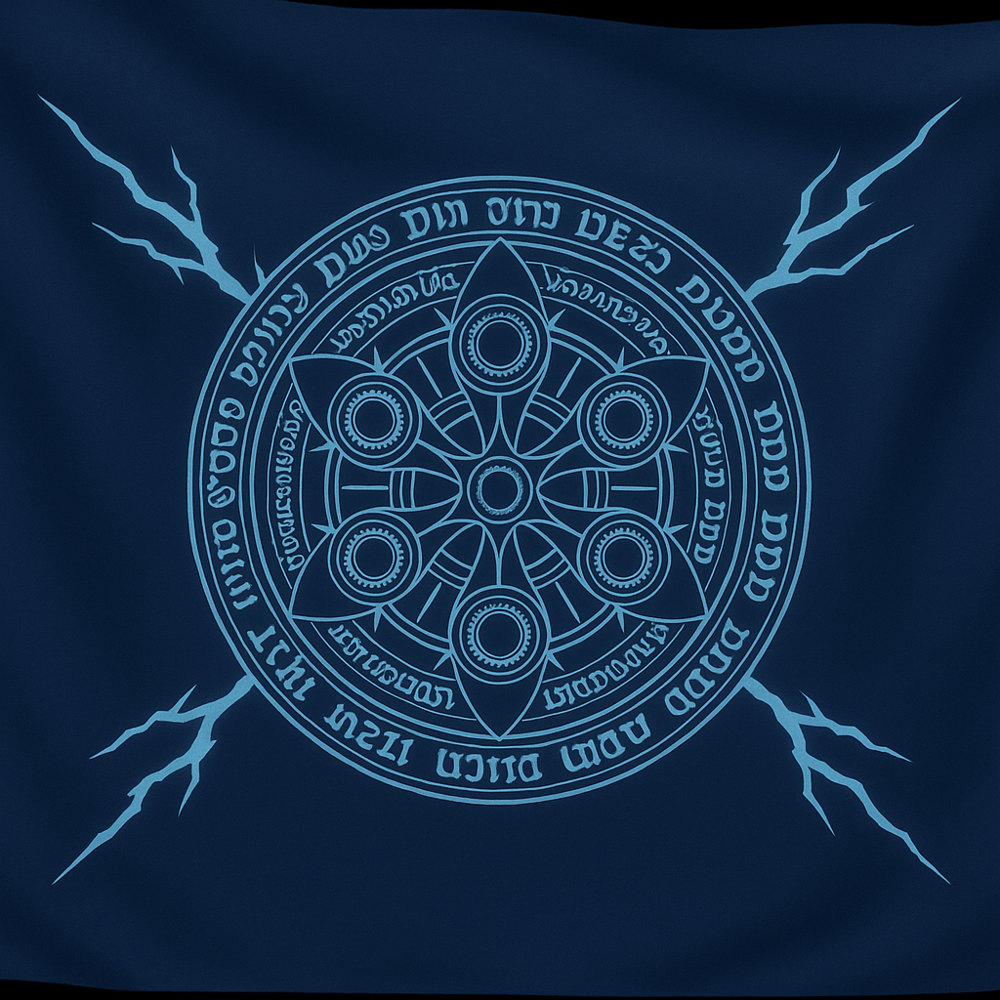
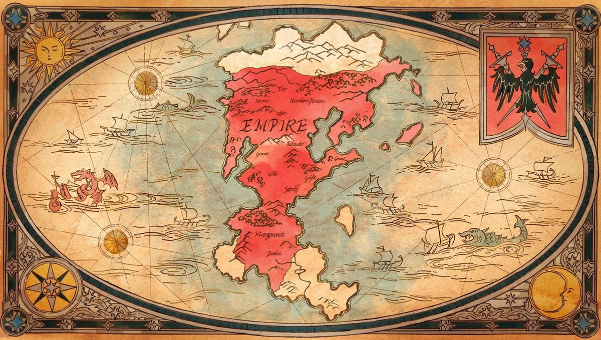

País de origen de Frieren
Bandera

Mapa

Frieren proviene de un reino ficticio en el norte del continente donde habitan los elfos. Su tierra natal es un lugar frío, lleno de bosques mágicos y montañas antiguas, donde los elfos viven por siglos en aislamiento. Aunque el anime no menciona un país con nombre específico, se da a entender que proviene de una región lejana que muy pocos humanos han visitado. La cultura de su pueblo está profundamente ligada a la magia y a la contemplación del tiempo.